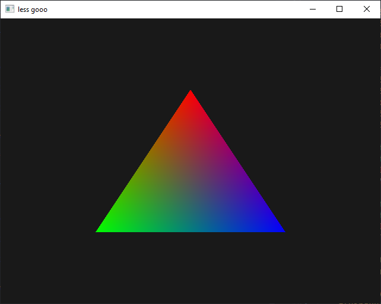
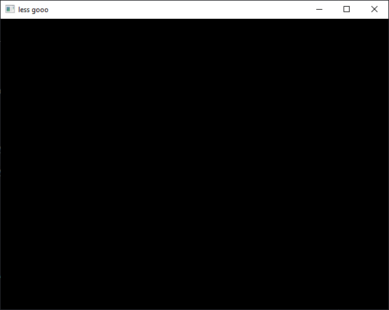
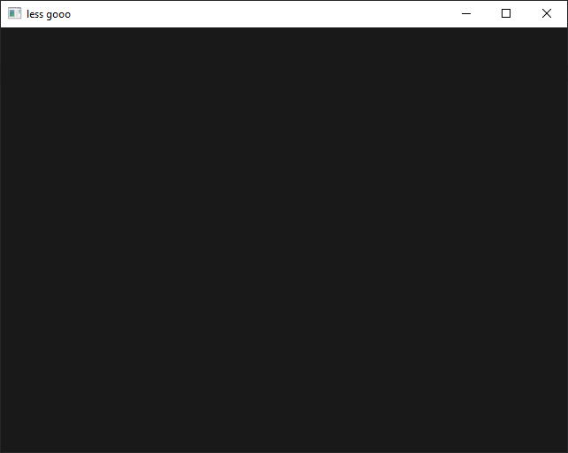

Introduction
Welcome to my OpenGL workshop! This workshop will walk you through the very basics of the modern OpenGL API (>= 3.3). By the end of it, you should have a rough understanding of how the API is structured and how it can be used to render simple hardware accelerated shapes.
What's OpenGL?
OpenGL is a graphics API that gives you the power to use your video card for graphical rendering. Without it, you would have to manually compute the colour for every single pixel you would like to draw using the CPU. That's horrendously slow, because you have to iterate through every single pixel one by one in sequence!
Instead, many computers have a Graphical Processing Unit (GPU for short). It is much more efficient because it's able to render different parts of your scene in parallel! To be able to communicate with it in your programs, many different APIs exist, each with a different set of capabilities and platform support.
The following table (that I just made up myself) summarises platform support for the most common graphics APIs out there:
| Platform | OpenGL | Direct3D (DirectX) | Vulkan | Metal |
|---|---|---|---|---|
| Windows | ++ | +++ | ++ | - |
| Linux | ++ | - | +++ | - |
| Android | ++ | - | +++ | - |
| Mac | + | - | +* | +++ |
| iOS | + | - | +* | +++ |
| Switch | + | - | ++ | - |
| Xbox | - | +++ | - | - |
*: non-official support through third-party software
The name of the Xbox comes from DirectX (it's a "direct-X Box"). The PlayStation by Sony has its own proprietary API, and the Nintendo Switch also supports NVN, an API developed by NVIDIA.
What are we making?
Most programmers begin to learn a new language or technology by writing a simple "Hello, World!" program. In the world of low-level graphics programming, the equivalent is the well known "RGB triangle":
 Hello, Triangle!
Being a low level API, OpenGL requires us to follow quite a bunch of steps in order to reach our goal:
- Create a shader program
- Create a buffer containing vertex coordinates
- Create a buffer containing vertex colours
- Define a vertex array using the two buffers
- Clear the screen
- Draw 3 vertices using our shader program and vertex array
Don't worry, we'll go through each of those steps one by one!
Setup
You can follow this workshop on Windows!
I have prepared a repository containing several utilities that aren't relevant to this workshop (e.g. to open a window, create an OpenGL context or load a bitmap file). This way, you'll be focused on the important parts of today's workshop: OpenGL!
Clone it somewhere on your computer to get started:
git clone https://github.com/nasso/opengl-workshop.git
You should have
cmakeinstalled (at least version 3.11).
Then try to build and run it!
mkdir build # create a `build/`
cmake . -B build # configure a CMake build in the `build/` directory
cmake --build . # build the executable
./main # run it!
At this point, you should see an empty window appear!
 An empty window!
When modifying your code (in src/main.c for instance), you'll only have to
re-run the last two commands to see your changes:
cmake --build . # re-build (only necessary files)
./main # re-run!
You shouldn't have to re-configure! CMake should automatically re-configure the build when deemed necessary.
Hello, Triangle!
Traditionally, when learning a new language or technology, us programmers enjoy writing a simple program displaying, in some way, "Hello, World!".
Now, in the world of low-level graphics programming, displaying text is already quite a complex task. In fact, it's probably one of the hardest things to do properly on today's GPUs.
Instead, graphics programmers have their own tradition: the RGB triangle! Here's what you should have at the end of this chapter:
Hello, World Triangle!
Clearing the screen
Right now, your window probably doesn't show anything exciting yet. Let's change that!
Use glClear and glClearColor to clear the framebuffer of your window
using the colour of your choice! Do it in the render function callback to
clear the screen every time before anything gets drawn.
 I went with some dark shade of grey.
Links
- OpenGL 4 Reference Pages - the official documentation
- docs.gl - a nicer documentation, though unofficial
Your own shader program
Finally, the time has come! The time for what you ask? Well, to write your very own pair of GLSL shaders of course!
You might be wondering what I'm talking about, so let's reiterate, shall we?
What is a shader?
Shaders are pieces of software that run on your GPU. They are used to perform specialised calculations based on a set of inputs in parallel. They are written in a language specific to the graphics API you're using. The OpenGL Shading Language, abbreviated as GLSL, is the one we're going to use today.
Don't worry! GLSL is actually very close to C! It just comes with fancy features that make it easier to write shaders: types such as
vec2,vec3,vec4to represent vectors and built-in mathematical functions likedistance,normalizeandcross.
Depending on their role in the graphics pipeline, shaders can take several names:
Vertex shaders
The first step when rendering anything, is to give a position to each vertex. This is exactly what the vertex shader is for! It is executed once for each vertex, to calculate its coordinates on screen. Typically, this is where you would apply transformations and 3D projections.
#version 330 core
layout(location = 0) in vec2 a_Position;
void main() {
gl_Position = vec4(a_Position, 0.0, 1.0);
}
Here are a couple things to note about this example shader:
- It written in GLSL 3.30 and uses the
coreAPI profile (the profile we're using). - It has a single input:
a_Position, a 2D vector. Thelayout(location = 0)part just means "this is input #0". - It constructs a 4D vector from
a_Positionand stores it intogl_Position. Thezcomponent is set to0.0andw(the fourth component) is set to1.0.
The main output of our vertex shader is the gl_Position variable, holding the
coordinates of a single point of the geometry we're drawing on screen!
You might wonder why
gl_Positionis avec4instead of avec2or avec3. This has to do with something called homogeneous coordinates. Don't worry too much about it for now, just keep in mind thatwshould be set to1.0!
The inputs of a vertex shader can be anything you want! For example, you could keep it simple and just feed it plain 2D coordinates like in the example above. But you could also feed it 3D coordinates and matrices, and let it do the math to figure out the final 2D position! Don't worry, your GPU loves doing math.
Exercise: compiling a vertex shader
To create a shader, you can use glCreateShader. Once created, you can load
the GLSL source code with glShaderSource and compile it with
glCompileShader. To make it easier for you to write your shaders in separate
files (typically *.vs for vertex shaders and *.fs for fragment shaders),
I've written a helper function to read a file in a heap-allocated string:
char* source = read_file("./res/my_shader.vs");
GLuint shader = glCreateShader(GL_VERTEX_SHADER);
glShaderSource(shader, 1, &source, NULL);
glCompileShader(shader);
// don't forget to free the shader source string!
free(source);
Just don't forget to #include "utils.h" at the top of your C source file.
Try creating and compiling a vertex shader (for instance, the above example) using those functions.
You can use
glGetShaderivandglGetShaderInfoLogto see if your shader successfully compiled! Try inserting a syntax error and see if you can get a meaningful error message from it.
Fragment (or pixel) shaders
After the vertex shader computed the positions of each triangle (GPUs can only draw triangles), the next step is to actually fill them with colourful pixels! Now, to decide what colour each pixel takes, another kind of shader is executed: the fragment shader (also known as pixel shader).
Yes, it is executed for each individual pixel on screen. That means cycles are precious at this stage! Luckily, this is what modern GPUs are optimised for.
Unlike the vertex shader, you cannot directly feed per-pixel input to your fragment shader. However, you can pass variables from your vertex shader to your fragment shader! Different values between two vertices will be linearly interpolated.
#version 330 core
// coming from an output of the vertex shader!
in vec3 v_Color;
// the final colour of the pixel!
out vec4 o_Color;
void main() {
o_Color = vec4(v_Color, 1.0);
}
Exercise: compiling a fragment shader
Fragment shaders are compiled the exact same way as vertex shaders (don't forget
to specify GL_FRAGMENT_SHADER when creating it though).
Because of how similar it is to compile vertex and fragment shaders, maybe you could write a helper function to do it for you...
A shader program
You now have a vertex shader and a fragment shader compiled! It's now time to link them together, just like you would link two object files together to get a full program.
The function to do that is conveniently called glLinkProgram. Use it to link
a shader program for the two shaders you have compiled.
Just like compilation, linkage can fail! You can use
glGetProgramivandglGetProgramInfoLogto get information about any error that occurred when linking your shaders.
Did it successfully link? In your vertex shader, add an input similar to
a_Position called a_Color, and pass its value to the fragment shader using
an out variable (they must share the same name in the two shaders).
Creating a vertex array
You should now have a pair of shaders that are compiled and linked together to form a shader program!
The next step will be to actually feed data to our program! The graphics pipeline starts with the Vertex Shader, so we have to provide it per-vertex data. We do so by creating what is called a Vertex Array (makes sense, right?).
Our triangle is made up of three vertices, so we will need three entries in our vertex array. In the following table, each line represents a vertex in our vertex array:
| X position | Y position |
|---|---|
0.0 | 0.5 |
-0.5 | 0.5 |
0.5 | -0.5 |
A vertex can have any sort of data associated with it, not just its position! For instance, we can associate a colour to each vertex:
| X position | Y position | Red | Green | Blue |
|---|---|---|---|---|
0.0 | 0.5 | 1.0 | 0.0 | 0.0 |
-0.5 | 0.5 | 0.0 | 1.0 | 0.0 |
0.5 | -0.5 | 0.0 | 0.0 | 1.0 |
Buffers
In OpenGL, as with many other graphics API, a vertex array doesn't directly hold the data associated with each vertex. Instead, a one-dimensional generic data structure called a "buffer" is used to store arbitrary data that can then be used to construct a vertex array.
Keeping the example above, we could have a buffer storing 2D vertex positions:
| X1 | Y1 | X2 | Y2 | X3 | Y3 |
|---|---|---|---|---|---|
0.0 | 0.5 | -0.5 | 0.5 | 0.5 | -0.5 |
Because buffers are one-dimensional data structures, vertex coordinates have to
be stored in an interleaved layout (X1, Y1, X2, Y2, ...XN, YN).
OpenGL provides a couple functions to manipulate buffers:
glGenBuffers: to create buffersglDeleteBuffers: to destroy buffersglBufferData: to set the buffer contentsglBindBuffer: to "bind" buffers (more on that in the next section)
The OpenGL state machine
When programming with the OpenGL API, you will encounter many glBind*
functions. This is because OpenGL was designed around the concept of a "state
machine" where objects must be bound before being manipulated. In other words,
you cannot use glBufferData before having bound your buffer with
glBindBuffer:
// first, bind the buffer...
glBindBuffer(GL_ARRAY_BUFFER, my_buffer);
// now that it is the current GL_ARRAY_BUFFER, you can set its data!
glBufferData(GL_ARRAY_BUFFER, /* ... */);
Pay attention to the arguments of
glBufferData! Look it up... None of them corresponds directly to the buffer ID you want to manipulate.
Buffers: checkpoint
Back to code! Create the following buffers for the vertex array we will be creating in the next section:
| X1 | Y1 | X2 | Y2 | X3 | Y3 |
|---|---|---|---|---|---|
0.0 | 0.5 | -0.5 | 0.5 | 0.5 | -0.5 |
| R1 | G1 | B1 | R2 | G2 | B2 | R3 | G3 | B3 |
|---|---|---|---|---|---|---|---|---|
1.0 | 0.0 | 0.0 | 0.0 | 1.0 | 0.0 | 0.0 | 0.0 | 1.0 |
The first one will contain vertex coordinates, and the second will contain
vertex colours. The data they contain should be an array of floats.
Don't forget to delete the buffers at the end of your program!
Constructing the vertex array
You should now have two buffers created, one containing 2D coordinates and the
other containing colours. The last step of the process is to actually build a
vertex array from that data! You can generate an empty vertex array with
glGenVertexArrays.
Remember the shaders you wrote? In your vertex shader, input variables denoted
with the in keyword correspond to vertex attributes. Each attribute in a
shader has a unique location that can be specified with
layout(location = ...). When created with glGenVertexArrays, vertex arrays
don't have any attributes: you must enable each location with
glEnableVertexAttribArray.
Don't forget to bind the vertex array with
glBindVertexArraybefore manipulating it!
Now that you have enabled each vertex attribute location, the last step is to specify where the data is, and the answer is... in the buffers of course!
However, the buffers we created don't hold any information regarding the format in which our data is stored: it's just an array of raw bytes. The vertex shader expects more sophisticated data types, such as single-precision floating-point vectors for example.
Thankfully, glVertexAttribPointer lets us specify all of that with a single
function call (minus the call to glBindBuffer)! Its index parameter
corresponds to the attribute location you want to assign data to.
In the end, the code to build the vertex array should look like this:
// create the coordinates buffer:
glGenBuffers(...);
glBindBuffer(...);
glBufferData(...);
// same for the buffer storing vertex colours:
/* ... */
// create the vertex array:
glGenVertexArrays(...);
glBindVertexArray(...);
// bind one of the buffer to the vertex attribute it corresponds to:
glEnableVertexAttribArray(...);
glBindBuffer(...);
glVertexAttribPointer(...);
// then do the same for the other attribute!
/* ... */
glGenBufferscan be used to create several buffers at the same time!
And that's all you need to render a triangle! Well, almost... In the next chapter, we will put together everything we've done so far to finally get something rendered on the screen!
Drawing the triangle
You should now have:
- A shader program that compiles and links
- A vertex array providing vertex data for each attribute used by your program
The only thing left to do is to draw the three vertices of the triangle using the program and vertex array we prepared in the previous chapters. To do this, you'll only need to use three functions:
glUseProgram, to specify the shader programglBindVertexArray, to specify the vertex arrayglDrawArrays, to draw the vertices!
Up until now, everything went in the
initcallback function, because the program and vertex array only need to be created once. However, the triangle should be redrawn each frame, reusing the shader program and vertex array every time, so you will probably want to do that in therendercallback function.
If you did everything right, you should now finally see the triangle show up!
Hello, Triangle!
If you don't see anything: don't worry! Most of us don't get things working right away on our first try. Check for errors using
glGetError, go back a few chapters, and do not hesitate to ask for help (you're probably not the only one)!